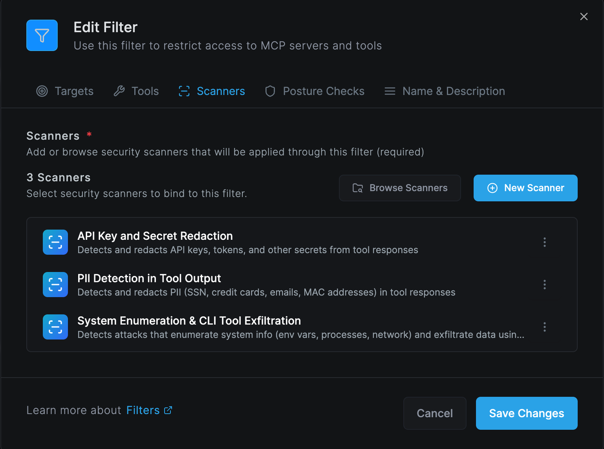

Executive Summary
In April 2026, security researchers disclosed a systemic remote code execution (RCE) vulnerability affecting more than a dozen popular AI platforms — including LangFlow, LiteLLM, Windsurf, Agent Zero, Flowise, and others. The root cause is a single architectural flaw: these platforms pass user-supplied shell commands directly to Anthropic's MCP STDIO transport layer without sanitization.
An attacker who can reach the MCP configuration interface — in some cases with no authentication — can achieve full remote code execution on the server running the AI platform, affecting an estimated 200,000 deployed servers.
Netzilo AI Edge now ships AIDR signatures that detect this attack family, before any malicious payload can reach your agent or be acted upon. These signatures cover all four attack families and are active for all customers as of today.
Threat Overview
What is MCP STDIO?
The Model Context Protocol (MCP) is Anthropic's open standard for connecting AI agents to external tools and data sources. The STDIO transport runs a subprocess on the host machine to communicate with an MCP server — meaning whatever binary is specified in the command field gets executed directly on the operating system.
This is by design for local developer setups. The vulnerability arises when platforms expose MCP configuration through a web interface without validating what command is being specified.
The Four Attack Families
Family 1 — Direct Shell Injection
CriticalThe attacker opens the MCP server configuration interface and enters a shell binary (bash, sh, powershell.exe) as the command value, with a malicious payload in the args field. The platform passes this directly to StdioServerParameters and the OS executes it. Several platforms require no authentication to exploit.
- Affected: LangFlow, LiteLLM (CVE-2026-30623), Agent Zero (CVE-2026-30624), Jaaz (CVE-2026-30616), LangChain-ChatChat (CVE-2026-30617), Fay (CVE-2026-30618), Bisheng (CVE-2026-33224), LangBot
- Severity: Critical — unauthenticated or trivially authenticated RCE
Family 2 — Allowlist Bypass via Exec Flags
HighSome platforms restricted the command field to approved launchers (npx, python, node, npm). Researchers found this is easily bypassed: all four approved launchers support a code-execution flag. python -c, node -e, and npx -- bash all execute an arbitrary inline string. The attacker sets the command to an approved binary and injects the real payload via the args field.
- Affected: Upsonic (CVE-2026-30625), Flowise (CVE-2026-40933)
- Severity: High — bypasses first-generation allowlist mitigations
Family 3 — Prompt Injection to Config Write
CriticalThe most sophisticated variant requires no access to the configuration interface. An attacker serves a malicious web page containing a prompt injection directive. When the AI agent fetches that page, the directive instructs it to modify the local MCP configuration file (.mcp.json, claude_desktop_config.json, .cursor/mcp.json, etc.) to register a malicious STDIO server. On next startup, the agent auto-connects to the malicious server and executes arbitrary commands — with no further user interaction.
- Affected: Windsurf (CVE-2026-30615) with full zero-click RCE; Cursor, Claude Code, Gemini-CLI, GitHub Copilot as one-click variants
- Severity: Critical — no configuration UI access required; attack is invisible to the developer
Family 4 — Transport-Type Downgrade
CriticalSome platforms only expose HTTP or SSE transport options in their UI, with no STDIO option visible. However, the backend still contains STDIO processing code. An attacker intercepts the API request that adds an MCP server, changes the transport_type field from 'sse' or 'http' to 'stdio', and appends a command field. The backend accepts and executes it.
- Affected: DocsGPT (CVE-2026-26015), LettaAI — both patched on their production infrastructure
- Severity: Critical — bypasses UI-level transport controls entirely
Netzilo AIDR Signatures
The three signatures below are active in your AIDR gateway. They operate at the message layer — inspecting tool descriptions, tool responses, LLM requests, and agent file writes — so they catch attack payloads as they flow through your AI agent, independent of which platform or MCP client you run.
Signature 1 — mcp-stdio-config-injection
Critical
Attack families: Family 1 (direct STDIO injection) + Family 4 (transport-type downgrade)
CVEs: CVE-2026-30623/30624/30616/30617/30618/33224, CVE-2026-26015
What it detects: Any content where the MCP command field contains a shell binary (bash, sh, zsh, powershell.exe, cmd.exe). Also catches the Family 4 downgrade fingerprint: a JSON payload containing both transport_type set to "stdio" and a command field together — a combination that never appears in legitimate HTTP or SSE configs. Reverse shell patterns inside MCP args arrays are caught directly.
Structural signal: Shell binary as command value is a FORMAT signal. Legitimate MCP launchers are always package managers or named scripts (npx, python script.py). No allowlist or framing bypasses this check.
Action: BLOCK — no AI review needed. Shell binaries as MCP launchers have zero legitimate use cases.
Signature 2 — mcp-launcher-exec-bypass
High
Attack families: Family 2 (allowlist hardening bypass)
CVEs: CVE-2026-30625 (Upsonic), CVE-2026-40933 (Flowise)
What it detects: MCP configurations where an approved launcher (npx, node, python3, npm) appears as the command but the args field contains a code-execution flag: -c (python), -e or --eval (node), or a shell redirect via -- bash/sh. These flags cause the approved launcher to execute an arbitrary inline string rather than a named MCP package.
Structural signal: The exec flag in the args array is the structural signal, independent of the payload that follows. A legitimate npx MCP server always starts with a package name (@scope/package), never -c.
Action: BLOCK — the exec flag pattern is unambiguous. Legitimate MCP configs are excepted when args start with a named package.
Signature 3 — mcp-config-write
High
Attack families: Family 3 (prompt injection → MCP config modification → zero-click RCE)
CVEs: CVE-2026-30615 (Windsurf) — also applies to Cursor, Claude Code, Gemini-CLI, GitHub Copilot variants
What it detects: Agent tool calls that write to known MCP configuration file paths: .mcp.json, claude_desktop_config.json, cline_mcp_settings.json, .cursor/mcp.json, and equivalents. Also catches writes to any JSON file containing an mcpServers structure with a command field, regardless of filename.
Structural signal: The file path and mcpServers JSON key are structural signals. An agent writing to these paths should always reflect explicit developer intent — writes driven by attacker-controlled web content lack this signal.
Action: SCAN → AI review distinguishes developer-requested config updates from injection-driven writes. A config containing a shell binary command is simultaneously escalated to BLOCK by Signature 1.
CVE Coverage Matrix
| CVE | Affected Product | Family | AIDR Signature | Reference |
|---|---|---|---|---|
| CVE-2026-30623 | LiteLLM | Family 1 | ✓ Signature 1 | NVD → |
| CVE-2026-30624 | Agent Zero | Family 1 | ✓ Signature 1 | NVD → |
| CVE-2026-30616 | Jaaz | Family 1 | ✓ Signature 1 | NVD → |
| CVE-2026-30617 | LangChain-ChatChat | Family 1 | ✓ Signature 1 | NVD → |
| CVE-2026-30618 | Fay (Fay数字人) | Family 1 | ✓ Signature 1 | NVD → |
| CVE-2026-33224 | Bisheng | Family 1 | ✓ Signature 1 | NVD → |
| Unassigned | LangFlow | Family 1 | ✓ Signature 1 | GitHub |
| Unassigned | LangBot | Family 1 | ✓ Signature 1 | GitHub |
| CVE-2026-30625 | Upsonic | Family 2 | ✓ Signature 2 | NVD → |
| CVE-2026-40933 | Flowise | Family 2 | ✓ Signature 2 | NVD → |
| CVE-2026-30615 | Windsurf | Family 3 | ✓ Signature 3 | NVD → |
| CVE-2026-26015 | DocsGPT | Family 4 | ✓ Signature 1 | NVD → |
| Unassigned | LettaAI | Family 4 | ✓ Signature 1 | GitHub |
Recommended Actions
Administrator: Rolling Out Signatures to Users
The three AIDR signatures are available in your AIDR scanner repo. Administrators must attach them to the appropriate Filters before they become active for your agent users. Follow these steps to deploy them across your organisation.
Step 1 — Open the Filter you want to protect
In the AIDR console, navigate to Filters. Open the Filter that is applied to your AI agents (for example, your default coding-agent filter or any filter scoped to MCP-enabled tools). If you do not yet have a filter, create one using the + New Filter button, then set its Targets and Agents before proceeding.
Step 2 — Go to the Scanners tab
Inside the Edit Filter panel, click the Scanners tab. You will see all scanners currently attached to this filter. The screenshot below shows a correctly configured filter with all three MCP signatures active alongside the core Prompt and Behavior scanners.

Step 3 — Add the three MCP signatures
Click Browse Scanners to open the scanner library. Search for each of the following and click Add:
mcp-stdio-config-injection— blocks shell binary commands in MCP STDIO configs (Families 1 & 4)mcp-launcher-exec-bypass— blocks allowlist bypass via exec flags (Family 2)mcp-config-write— reviews agent writes to MCP configuration files (Family 3)
After adding all three, your Scanners tab should show at minimum: Prompt Scanner, Behavior Scanner (AIDR), pii-ssn-redact, pii-credit-card-redact, mcp-config-write, mcp-stdio-config-injection, and mcp-launcher-exec-bypass — matching the screenshot above.
Step 4 — Save Changes and verify scope
- Click Save Changes. The signatures become active immediately for all agents and tools within this filter's scope.
- If you manage multiple filters (e.g., separate filters per team or per MCP server), repeat Steps 1–3 for each filter that covers agents with MCP access.
- To confirm activation: trigger a test tool call containing the string
{"command": "bash"}in a tool response payload routed through the filter. The gateway should return a block action frommcp-stdio-config-injection.
Step 5 — Monitor alerts
After deployment, monitor the AIDR alerts dashboard for the first 48 hours. The signatures are tuned for near-zero false positives, but mcp-config-write uses AI review and may surface legitimate developer MCP config updates as scan events. Review any scan escalations and confirm they are injection-driven writes rather than explicit developer actions.
Quick checklist for administrators
- ☐ Open each MCP-scoped Filter in the AIDR console
- ☐ Scanners tab → Browse Scanners → add all three MCP signatures
- ☐ Save Changes — signatures activate immediately
- ☐ Repeat for every filter that covers MCP-enabled agents
- ☐ Monitor alerts dashboard for 48 hours post-deployment
References
CVE Records
- CVE-2026-30623 — LiteLLM
- CVE-2026-30624 — Agent Zero
- CVE-2026-30616 — Jaaz
- CVE-2026-30617 — LangChain-ChatChat
- CVE-2026-30618 — Fay (Fay数字人)
- CVE-2026-33224 — Bisheng
- CVE-2026-30625 — Upsonic
- CVE-2026-40933 — Flowise
- CVE-2026-30615 — Windsurf
- CVE-2026-26015 — DocsGPT
Vendor Security Bulletins
- LiteLLM — CVE-2026-30623 Security Update
- LangChain-ChatChat — RCE via MCP Issue #5428
- Agent Zero — CVE-2026-30624 Detail
Further Reading
- NVD — MCP STDIO Vulnerability Cluster (search: MCP STDIO 2026)
- The Hacker News — Anthropic MCP Design Vulnerability Enables RCE
- The Register — MCP design flaw puts 200k servers at risk
- CSO Online — RCE by design: MCP architectural choice haunts AI agent ecosystem
- Anthropic Model Context Protocol Specification